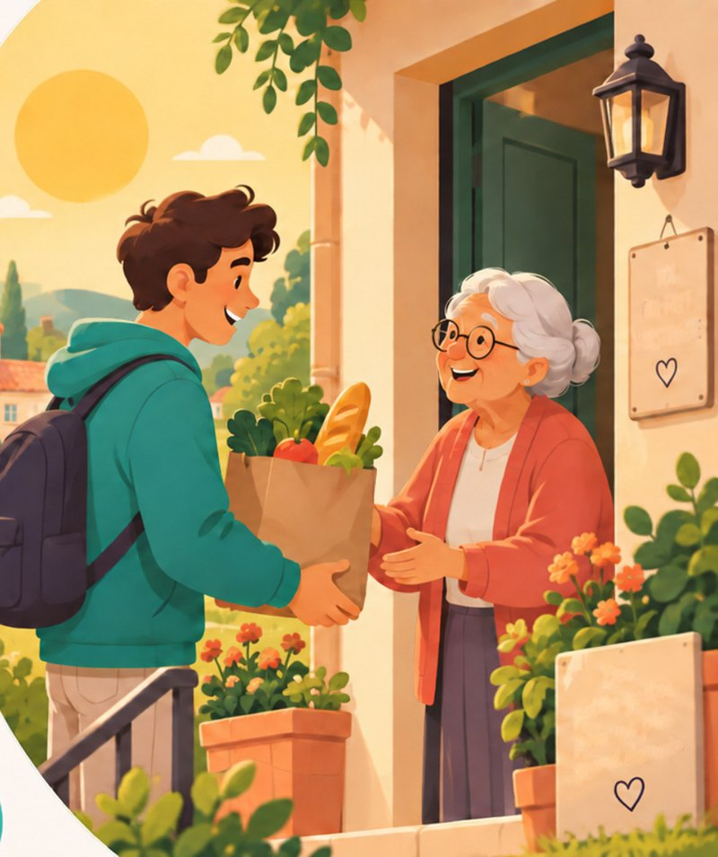
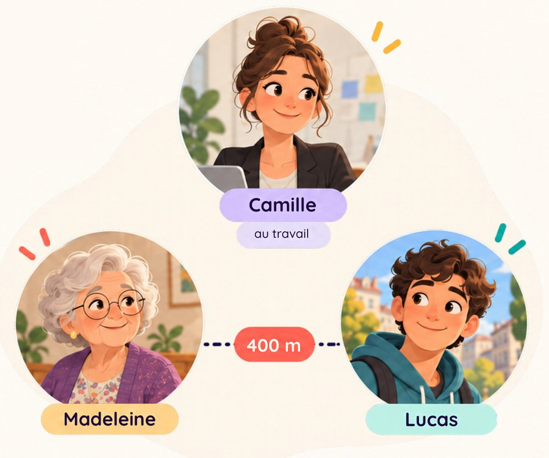

VOISIN D’OR
Petits services.
Grands liens.
L’entraide entre générations, à portée de clic. Un jeune du quartier aide une personne âgée pour les courses, le ménage, le bricolage, l’informatique, le jardinage ou la cuisine.

Utilisez Voisin d’Or dès maintenant !
Disponible sur le web, depuis un téléphone, une tablette ou un ordinateur. Rien à installer.
Ouvrir l’applicationC’est quoi Voisin d’Or ?
Une application gratuite pour trouver un jeune du quartier, à moins de 2 km, pour un petit service du quotidien.
Pour une personne âgée, ou pour un proche qui organise l’aide à sa place, toujours avec son accord.

Nos services
Les petits besoins du quotidien.
TARIFS & PARTENAIRES
Un service gratuit, entre voisins.
CADRE DE CONFIANCE
L’entraide, jamais un paiement obligatoire.
Voisin d’Or reste un service entre voisins. Quatre principes simples encadrent chaque échange.
01
Le respect avant tout.
On échange avec bienveillance et on respecte les horaires convenus.
02
L’accord du proche.
Un accompagnateur agit toujours avec l’accord de la personne qu’il aide.
03
Le téléphone protégé.
Le numéro n’est partagé qu’une fois la demande acceptée.
04
Le pourboire est libre.
Jamais un paiement obligatoire : juste un merci, si on le souhaite, donné directement.
TÉMOIGNAGES
Ils en parlent.
CamilleAccompagnatrice
« Grâce à Voisin d’Or, j’ai trouvé quelqu’un de confiance pour aider ma grand-mère, sans avoir à tout gérer moi-même. »
LucasJeune volontaire
« Je rends service près de chez moi entre deux cours, et chaque rencontre est différente. »
MadeleineBénéficiaire
« On m’aide à faire mes courses et on prend le temps de discuter. Ça change ma semaine. »
CONTACT
Une question, une idée ?
Écrivez-nous : nous répondons à toutes les questions sur Voisin d’Or, le projet et son fonctionnement.
INFORMATIONS
Mentions légales, CGV et confidentialité
Mentions légales
Voisin d’Or est un projet étudiant du groupe de Manel, Sofiane, Youmna et Sara, Master 2 CIM, ICOM, Université Lumière Lyon 2. Site hébergé par Firebase Hosting. Contact : formulaire ci-dessus.
Conditions générales
Voisin d’Or est un service gratuit de mise en relation entre voisins. Aucun paiement n’est traité sur la plateforme : le pourboire, s’il est donné, se fait directement entre les personnes, en dehors de l’application.
Confidentialité
L’application enregistre le prénom, le nom, l’e-mail, le téléphone et l’adresse de chaque utilisateur pour la mise en relation. L’adresse exacte n’est jamais affichée et le téléphone n’est partagé qu’après acceptation d’une demande. Pour faire supprimer vos données, écrivez-nous via le formulaire de contact.